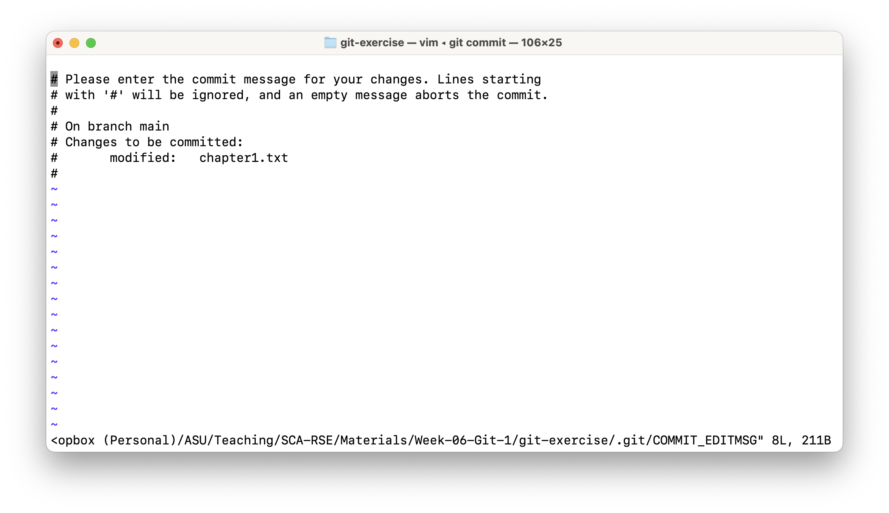
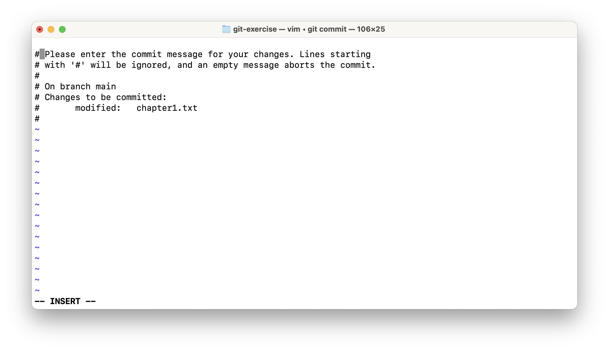

Vim
Vim#
We’ll make a slight detour here, to talk about the command line editor Vim. If you are on a Unix-based system such as Linux or Mac OSX, or if you are using GitBash, then you’ll likely run into it. It’s often the default editor used by Git and it can be a little scary when you’re not prepared for it. If you want to find out if it is the default editor for Git on your system, just omit the -m "commit message" part next time you commit your changes. If Vim is the default edtor, you’ll see something like this in your terminal:

This is Vim. The ~ are a hint, you’ve entered this editor. There are two modes in Vim: the insert mode and the command mode. If you are in the insert mode, you can edit text. In the command mode, you tell Vim to do things like saving your work or exiting. If you end up in Vim because Git wants to specify a commit message, just do the following.
Type
a. This should get you into the insert mode. In the insert mode, the bottom of the terminal window will say--INSERT--.

Now you can type your commit message.
When you are done, hit the
esckey on your keyboard. The bottom of the window should now just be an empty line. You are back in command mode.To save your changes and exit Vim, type
:wqand hit enter. If you just want to save your changes, type:wand hit enter. If you just want to exit type:qand hit enter.
For more commands of Vim, check out this page.
Note
If you want to configure a different default editor for Git to use, there are several editors and how to configure them listed on this page (about half-way down the page).